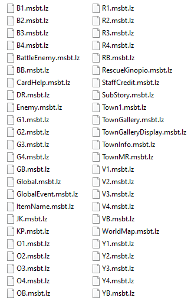
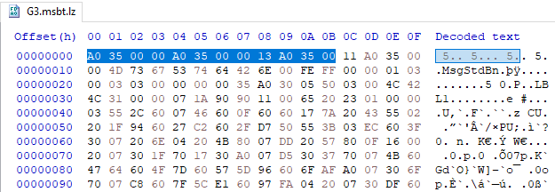
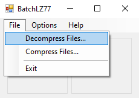
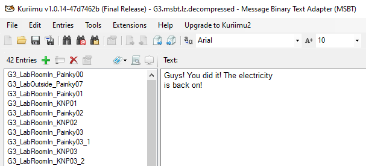
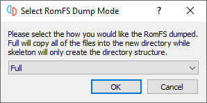

Paper Mario Modding
What is Paper Mario?
Paper Mario is an ongoing series of action-adventure games by Nintendo. Each one features expansive overworld levels to explore, and interesting turn-based battles. Here, I'll be focusing on the modern trilogy of games:
- Sticker Star (2012): Nintendo 3DS
- Color Splash (2016): Wii U
- The Origami King (2020): Nintendo Switch
In this guide, I'll mostly be going over text modding. It's the only thing I'm sure of how to do for all of these games, and it's pretty easy to start with.
I also have a very in-depth analysis on Color Splash that you can read here.
Fast section links: Sticker Star, Color Splash, The Origami King
Sticker Star Modding

What You'll Need
- A decrypted copy of the game. Dump it from your own 3DS; the steps for this are outside the scope of this guide.
- Citra emulator. For this mod, I used Citra Nightly 1705. Use the most recent version, it'll still work. It shouldn't matter whether you use Nightly or Canary.
- Kuriimu. This program lets you open and edit MSBT files, which you will need to do to replace the text.
The Guide
We'll be playing the game on Citra. You could play mods on a regular 3DS as well, but Citra works best for testing them.
- Get a fresh RomFS dump. You can do this from Citra by right clicking on the game and choosing "Dump RomFS".
- If you're on the USA release, the files can be found in
%APPDATA%\Citra\dump\romfs\00040000000A5E00. Your folder should look like this: - Navigate to
\messages\US_English. You'll edit a different file depending on which level and part of the game you want to change the text in. See here for a full reference sheet. For this tutorial, we'll do Surfshine Harbor, because it's both uniquely labeled and easily accessible from the start of the game. Its text file isporttown_harbor.msbt. Make sure to back up any files before you edit them! - You can change any text you want from here. Make sure the text is spaced and doesn't go outside of the text box; use the length of the original message as a guideline for how many characters long each line should be.
- You've changed your text, but where should it go now? It's time to create a mod directory. Go back to Citra's menu and right-click Sticker Star, then click "Open Mods Data", which should take you to
%APPDATA%\Citra\load\mods\00040000000A5E00\. The code used for the game here is the same one as the dumped RomFS. - Create a
\romfsfolder. Inside there, everything should match the original dump's structure. - Create another
\messages\US_Englishfolder and drop your edited text file in there. Again, make sure it exactly matches the name of the original file. - Play Sticker Star in Citra and get to the point where your text shows up. If it changed, congratulations! This guide worked!
- A quick note on disabling mods. The easiest way to do this is to rename the
romfsfolder inside\load\mods. This way, the file structure doesn't match up anymore, so the modded files won't be loaded. To load a mod again, rename theromfsfolder back.


Color Splash Modding
What You'll Need
- A decrypted copy of the game.
- Cemu emulator. I used Cemu 1.22.13b, but anything afterwards will work too.
- Kuriimu. This game uses MSBTs, although compressed.
- BatchLZ77. This is what you'll be using to decompress and recompress the files.
- HxD. Any hex editor should work, but this is the one I like best.
The Guide
Color Splash is a Wii U game, so start up Cemu. This is much more difficult than the other two games, but that's why I'm writing this guide in the first place.
- I'm using the Loadiine version, so there's no single ROM file to dump. You'll already have your game files, and you'll be editing them directly. Make sure to back up anything before you edit it!
- First, navigate to
content/messages/US_English_Final/. You'll see your dialogue files here, but they're LZ77 type 11 compressed.

- For this tutorial, we'll be changing dialogue in the Green Energy Plant, which is
G3.msbt.lz. See here for a full list of what the files are. Notice the extra extension; this is a compressed file, which we'll have to decompress to edit. Open up HxD and drag the original file into it. HxD will automatically back up your files when you edit them, with the original recreated with a.bakextension. - Highlight every byte up to (but not including) 11 and copy them down for later. Then, delete them so that the file begins with the 11 byte. Save the file. 
- Open
BatchLZ77.exe. Decompress the file you've edited. This will createG3.msbt.lz.decompressed.

- You can now load the decompressed file into Kuriimu. Find the text you want and make edits to it. When you're done, save the file. 
- Next, you'll need to recompress the file. Use BatchLZ77's compression on your edited decompressed file.
- Hex edit your newly compressed file. At the very beginning of the file, paste in the bytes up to 11 that you initially removed. For this file, they're
A0 35 00 00 A0 35 00 00 13 A0 35 00. - Rename the file to
G3.msbt.lzand put it directly in the file directory. It's okay to have backups in the same directory, but make sure they don't have the exact same filename and extension as your edited file. - Get to the point where the text will display in-game. If you can make it past the level's loading screen, you're probably good. If the text changed, congratulations!
- A decrypted copy of the game.
- Yuzu emulator. I used Yuzu 622 for this mod, but more recent versions should work as well.
- Kuriimu. This game uses MSBTs too.
- Get a fresh RomFS dump. Right click the game in Yuzu and click "Dump RomFS".
- Unlike with Citra, you'll be presented with another popup. This asks if you want a full RomFS dump, with game files, or just the directory structure. Choose "Full" and wait until the dump is complete. 
- You can find your game file dump in
%APPDATA%\yuzu\dump\0100A3900C3E2000\romfs\. It should look like this: - Navigate to
\msg\US_English_Finalfor the dialogue files. It should look like this: - I've charted what each MSBT file is and what it contains here. For now, let's start by editing Overlook Tower, an early-game area that doesn't have much text. Unlike in Sticker Star and Color Splash, the lines are not labeled with the character who speaks them. However, they're placed in roughly descending order that they appear in-game. Open up
W1C4.msbtand make any edits you want. Make sure to back it up, first! - As with Sticker Star, you need to place this in a mod directory. Right-click the game in Yuzu's menu and click "Open Mod Data Location"; the exact file path is
%APPDATA%\yuzu\load\0100A3900C3E2000. However, first, you'll need to give your mod a name. Create a folder named after the mod. You can have multiple mods at once. - After that, create a
\romfsfolder inside. Here, everything should match the original dump's structure. Create another\msg\US_English_Finaland then put your edited MSBT file in there. - Next, load your mod. Right click the game in Yuzu and click "Properties". Under the "Add-Ons" tab, you'll see a list of mods, named after their folders. Make sure the one you want to use is checked. This means that, when the file is loaded in the original game, it will replace it with the one from your mod directory.
- Play The Origami King in Yuzu and get to the point where your text shows up. If it changed, congratulations! This guide worked!
- To disable mods, just uncheck them in the "Properties" menu. For more about Yuzu mod support, check out the Yuzu website.
The Origami King Modding
What You'll Need
The Guide
The Origami King is a Switch exclusive, so we'll be playing it on Yuzu.